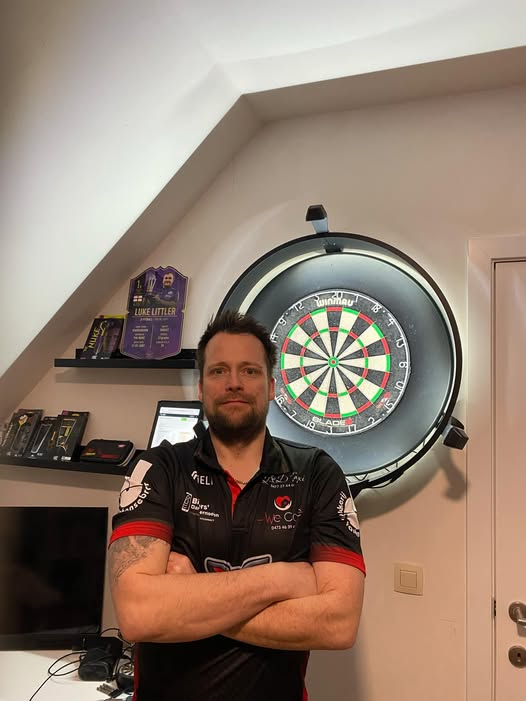

| Meet the Team |  |
|---|---|
| Naam: | Kevin Vanhalst aka The Brute |
| Leeftijd: | 41 |
| Woonplaats: | Diksmuide, maar in hart en ziel een echte Oostendenaar |
| Wanneer ben je begonnen met darten: | Op zee in 2021 voor de fun met Eddy Buyvoets, waar we met de collega’s dan Cricket speelden. In 2023 meer de focus op 501 gelegd. |
| 1ste dartpijlen: | MVG 23gr weliswaar Brass darts …… |
| Darts die ik gebruik: | Bulls Kim Huybrechts 23gram |
| Favoriete pro dartspeler: | Michael Smith |
| Favoriete dartsmerk: | Geen, maar als het vooral voor de looks is ga ik voor Shot! |
| Tip voor iedereen: | Tracht consequent te zijn in je routines en trainingen en train ook de zaken die niet zo goed gaan zoals bv. dubbels |